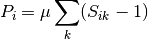

PyIBL version 4.2¶
Contents
Introduction¶
PyIBL is a Python implementation of a subset of Instance Based Learning Theory (IBLT) 1. It is made and distributed by the Dynamic Decision Making Laboratory of Carnegie Mellon University for making computational cognitive models supporting research in how people make decisions in dynamic environments.
Typically PyIBL is used by creating an experimental framework in the Python programming language, which
uses one or more PyIBL Agent objects. The framework
then asks these agents to make decisions, and informs the agents of the results of
those decisions. The framework, for example, may be strictly algorithmic, may interact with human
subjects, or may be embedded in a web site.
PyIBL is a library, or module, of Python code, useful for creating Python programs; it is not a stand alone application. Some knowledge of Python programming is essential for using it.
- 1
Cleotilde Gonzalez, Javier F. Lerch and Christian Lebiere (2003), Instance-based learning in dynamic decision making, Cognitive Science, 27, 591-635. DOI: 10.1016/S0364-0213(03)00031-4.
Installing PyIBL¶
The latest version of PyIBL can be downloaded from the DDMLab download site. Registration is required.
PyIBL requires Python version 3.7 or later. Recent versions of Mac OS X and recent Linux distributions
are likely to have a suitable version of Python pre-installed, but it may need to be invoked as python3
instead of just python, which latter often runs a 2.x version of Python instead. Use of a virtual environment,
which is recommended, often obviates the need for the python3/python distinction.
If it is not already installed, Python, for Windows, Mac OS X, Linux, or other Unices, can be
downloaded from python.org, for free.
PyIBL also works in recent versions of PyPy, an alternative implementation to the usual CPython. PyPy uses a just-in-time (JIT) compiler, which is a good match for PyIBL, and PyIBL models often run faster in PyPy compared to CPython.
Note that PyIBL is simply a Python module, a library, that is run as part of a larger Python program. To build and run models using PyIBL you do need to do some Python programming. If you’re new to Python, a good place to start learning it is The Python Tutorial. To write and run a Python program you need to create and edit Python source files, and then run them. If you are comfortable using the command line, you can simply create and edit the files in your favorite text editor, and run them from the command line. Many folks, though, are happier using a graphical Integrated Development Environment (IDE). Many Python IDEs are available. One is IDLE, which comes packaged with Python itself, so if you installed Python you should have it available.
After you download PyIBL, you will
have a file with a name something like pyibl-4.2.tar.gz. Assuming you are
using macOS or Linux, have a sufficiently recent version of Python and
it’s corresponding pip installed, and are in the same directory as
this file you can install PyIBL by typing at the command line
pip install pyibl-4.2.tar.gz
Depending upon various possible variations in how Python and your machine are configured you may have to modify the above in various ways
you may need to ensure your virtual environment is activated
you may need use an alternative scheme your Python IDE supports
you may need to call it
pip3instead of simplypipyou may need to precede the call to
pipbysudoyou may need to use some combination of the above
On Windows you may need to use some sort of Microsoft-specific incantation. Consult Windows Python documentation for help, and adjust the above instructions to match.
Examples and this documentation¶
In addition to PyIBL itself, the download site also makes available
a selection of example models using PyIBL
and this document, as a directory of files. After downloading the directory point a browser at the file
index.htmlwithin it.
Mailing list and reporting bugs¶
Users and others interested in PyIBL are encouraged to subscribe to the PyIBL mailing list.
The PyIBL community is small enough that this serves both as an announcement list and a discussion list. Announcements of new versions of PyIBL will be made here, and it is a good place to ask questions about PyIBL or solicit other help in using it.
It is also a good place to report any bugs, or suspected bugs, in PyIBL. If, however, you would prefer not to report them to this list, please feel free to instead send them to Don Morrison.
Tutorial¶
Likely the easiest way to get started with PyIBL is by looking at some examples of its use. While much of what is in this chapter should be understandable even without much knowledge of Python, to write your own models you’ll need to know how to write Python code. If you are new to Python, a good place to start may be the Python Tutorial.
A first example of using PyIBL¶
In the code blocks that follow, lines the user has typed begin with any of the three prompts,
$
>>>
...
Other lines are printed by Python or some other command.
First we launch Python, and make PyIBL available to it. While the output here was
captured in a Linux distribution and virtual environment in which you launch Python version 3.7 by typing python,
your installation my differ and you may launch it with python3, py, or something else
entirely; or start an interactive session in a completely different way using a
graphical IDE.
$ python
Python 3.9.0 | packaged by conda-forge | (default, Oct 14 2020, 22:59:50)
[GCC 7.5.0] on linux
Type "help", "copyright", "credits" or "license" for more information.
>>> import pyibl
Next we create an Agent, named 'My Agent'.
>>> a = pyibl.Agent("My Agent")
>>> a
<Agent My Agent 140441174486264>
We have to tell the agent what do if we ask it to choose between options
it has never previously experienced. One way to do this is to set a default
by setting the agent’s Agent.default_utility property.
>>> a.default_utility = 10.0
Now we can ask the agent to choose between two options, that we’ll just describe using two strings. When you try this yourself you may get the opposite answer as the IBLT theory is stochastic, which is particularly obvious in cases like this where there is no reason yet to prefer one answer to the other.
>>> a.choose("The Green Button", "The Red Button")
'The Green Button'
Now return a response to the model. We’ll supply 1.0.
>>> a.respond(1.0)
Because that value is significantly less than the default utility when we ask the agent to make the same choice again, we expect it with high probability to pick the other button.
>>> a.choose("The Green Button", "The Red Button")
'The Red Button'
We’ll give it an even lower utility than we did the first one.
>>> a.respond(-2.0)
If we stick with these responses the model will tend to favor the first button selected. Again, your results may differ in detail because of randomness.
>>> a.choose("The Green Button", "The Red Button")
'The Green Button'
>>> a.respond(1.0)
>>> a.choose("The Green Button", "The Red Button")
'The Red Button'
>>> a.respond(-2.0)
>>> a.choose("The Green Button", "The Red Button")
'The Green Button'
>>> a.respond(1.0)
>>> a.choose("The Green Button", "The Red Button")
'The Green Button'
>>> a.respond(1.0)
>>> a.choose("The Green Button", "The Red Button")
'The Green Button'
>>> a.respond(1.0)
>>> a.choose("The Green Button", "The Red Button")
'The Green Button'
>>> a.respond(1.0)
But doing this by hand isn’t very useful for modeling. Instead, let’s write a function that asks the model to make this choice, and automates the reply.
>>> def choose_and_respond():
... result = a.choose("The Green Button", "The Red Button")
... if result == "The Green Button":
... a.respond(1.0)
... else:
... a.respond(-2.0)
... return result
...
>>> choose_and_respond()
'The Green Button'
Let’s ask the model to make this choice a thousand times, and see how many
times it picks each button. But let’s do this from a clean slate. So, before
we run it, we’ll call reset() to clear the agent’s memory.
>>> a.reset()
>>> results = { "The Green Button" : 0, "The Red Button" : 0 }
>>> for i in range(1000):
... results[choose_and_respond()] += 1
...
>>> results
{'The Red Button': 11, 'The Green Button': 989}
As we expected the model prefers the green button, but because of randomness, does try the red one occasionally.
Now let’s add some other choices. We’ll make a more complicated function that takes a dictionary of choices and the responses they generate, and see how they do. This will make use of a bit more Python. The default utility is still 10, and so long as the responses are well below that we can reasonably expect the first few trials to sample them all before favoring those that give the best results; but after the model gains more experience, it will favor whatever color or colors give the highest rewards.
>>> def choose_and_respond(choices):
... result = a.choose(*choices)
... a.respond(choices[result])
... return result
...
>>> a.reset()
>>> choices = { "green": -5, "blue": 0, "yellow": -4,
... "red": -6, "violet": 0 }
...
>>> results = { k: 0 for k in choices }
>>> results
{'green': 0, 'blue': 0, 'yellow': 0, 'red': 0, 'violet': 0}
>>> for i in range(5):
... results[choose_and_respond(choices)] += 1
...
>>> results
{'green': 1, 'blue': 1, 'yellow': 1, 'red': 1, 'violet': 1}
>>> for i in range(995):
... results[choose_and_respond(choices)] += 1
...
>>> results
{'green': 10, 'blue': 488, 'yellow': 8, 'red': 8, 'violet': 486}
The results are as we expected.
Multiple agents¶
A PyIBL model is not limited to using just one agent. It can use as many as
the modeler wishes. For this example we’ll have ten players competing for rewards.
Each player, at each turn, will pick either 'safe' or 'risky'.
Any player picking 'safe' will always receive 1 point. All those
players picking 'risky' will share 7 points divided evenly between them; if fewer
than seven players pick 'risky' those who did will do better than
if they had picked 'safe', but if more than seven players pick 'risky'
they will do worse.
>>> from pyibl import Agent
>>> agents = [ Agent(name, default_utility=20)
... for name in "ABCDEFGHIJ" ]
>>> def play_round():
... choices = [ a.choose('safe', 'risky') for a in agents ]
... risky = [ a for a, c in zip(agents, choices) if c == 'risky' ]
... reward = 7 / len(risky)
... for a in agents:
... if a in risky:
... a.respond(reward)
... else:
... a.respond(1)
... return (reward, "".join([ a.name for a in risky ]))
Here’s what running it for ten rounds looks like.
>>> for i in range(10):
... print(play_round())
...
(1.4, 'BDFHI')
(1.4, 'ACEGJ')
(1.75, 'DFGI')
(1.4, 'BDEHJ')
(0.875, 'ABCEFGHI')
(0.7777777777777778, 'ABCDFGHIJ')
(1.4, 'ACEFG')
(1.75, 'BHIJ')
(1.0, 'ACDEGHJ')
By just looking at a small sample of runs we can’t really discern any
interesting patterns. Instead we’ll write a function that runs the
agents many times, and gathers some statistics. We’ll work out how
many agents pick risky, on average, by counting the length of the
second value returned by play_round(); how many times each of the
agents picked risky; and what the aggregate payoff was to each agent.
And then run it for 1,000 rounds.
Note that before running it we get a clean slate by calling each agent’s
reset method. And for the payoffs we round the results to one decimal
place, as Python by default would be showing them to about 16 decimal
places, and we don’t need that kind of precision.
>>> from statistics import mean, median, mode
>>> from itertools import count
>>> def run_agents(rounds):
... for a in agents:
... a.reset()
... by_round = []
... by_agent = [0]*len(agents)
... agent_payoffs = [0]*len(agents)
... for r in range(rounds):
... payoff, chose_risky = play_round()
... by_round.append(len(chose_risky))
... for a, i in zip(agents, count()):
... if a.name in chose_risky:
... by_agent[i] += 1
... agent_payoffs[i] += payoff
... else:
... agent_payoffs[i] += 1
... print(mean(by_round), median(by_round), mode(by_round))
... print(by_agent)
... print([float(f"{p:.1f}") for p in agent_payoffs])
...
>>> run_agents(1000)
6.408 7.0 7
[856, 283, 681, 851, 313, 230, 874, 706, 820, 794]
[1106.2, 1001.0, 1056.5, 1097.7, 1004.9, 1001.8, 1102.2, 1052.7, 1092.1, 1076.9]
Note that this time when we ran it seven of the agents chose risky over two thirds of the time, but three, b, e and f, chose it less than one third of the time, but all received about the same reward over the course of 1,000 rounds, just a little better than if they’d all always chosen safe.
Let’s run it for a few more 1,000 round blocks.
>>> run_agents(1000)
6.483 6.0 6
[335, 884, 630, 472, 165, 875, 857, 706, 886, 673]
[1007.9, 1091.8, 1029.9, 1007.6, 1000.2, 1100.9, 1080.3, 1051.5, 1103.7, 1043.2]
>>> run_agents(1000)
6.476 7.0 7
[323, 318, 267, 299, 888, 847, 834, 902, 912, 886]
[1005.1, 1003.8, 1001.4, 1001.0, 1088.2, 1078.6, 1063.1, 1094.0, 1098.0, 1090.7]
>>> run_agents(1000)
6.455 6.0 6
[525, 572, 716, 558, 666, 707, 828, 641, 502, 740]
[1031.6, 1030.3, 1067.6, 1034.4, 1051.9, 1075.7, 1112.5, 1048.9, 1026.9, 1065.3]
>>> run_agents(1000)
6.408 7.0 7
[856, 283, 681, 851, 313, 230, 874, 706, 820, 794]
[1106.2, 1001.0, 1056.5, 1097.7, 1004.9, 1001.8, 1102.2, 1052.7, 1092.1, 1076.9]
We see that a similar pattern holds, with a majority of the agents, when seen over the full 1,000 rounds, having largely favored a risky strategy, but a minority, again over the full 1,000 rounds, having favored a safe strategy. But which agents these are, of course, varies from block to block; and, perhaps, if we looked at more local sequences of decisions, we might see individual agent’s strategies shifting over time.
Attributes¶
The choices an agent decides between are not limited to atomic entities as we’ve used in the above. They can be structured using “attributes.” Such attributes need to be declared when the agent is created.
As a concrete example, we’ll have our agent decide which of two buttons,
'left' or 'right', to push. But one of these buttons will be
illuminated. Which is illuminated at any time is decided randomly, with
even chances for either. Pushing the left button earns a base reward of
1, and the right button of 2; but when a button is illuminated its reward
is doubled.
We’ll define our agent to have two attributes, "button" and "illuminatted".
The first is which button, and the second is whether or not that button is illumiunated.
In this example the the "button" value is the decision to be made, and
"illuminatted" value represents the context, or situation, in which this decision is being made.
We’ll start by creating an agent, and two choices, one for each button.
>>> from pyibl import Agent
>>> from random import random
>>> a = Agent("My Agent", ["button", "illuminated"], default_utility=5)
>>> left = { "button": "left", "illuminated": False }
>>> right = { "button": "right", "illuminated": False }
While we’ve created them both with the button un-illuminated, the code that actually runs the experiment will turn one of them on, randomly.
>>> def push_button():
... if random() <= 0.5:
... left["illuminated"] = True
... else:
... left["illuminated"] = False
... right["illuminated"] = not left["illuminated"]
... result = a.choose(left, right)
... reward = 1 if result["button"] == "left" else 2
... if result["illuminated"]:
... reward *= 2
... a.respond(reward)
... return result
...
>>> push_button()
{'button': 'right', 'illuminated': True}
Now we’ll reset the agent, and then run it 2,000 times, counting how many times each button
is picked, and how many times an illuminated button is picked.
>>> a.reset()
>>> results = {'left': 0, 'right': 0, True: 0, False: 0}
>>> for i in range(2000):
... result = push_button()
... results[result["button"]] += 1
... results[result["illuminated"]] += 1
...
>>> results
{'left': 518, 'right': 1482, True: 1483, False: 517}
As we might have expected the right button is favored, as are illuminated ones, but since an illuminated left is as good as a non-illuminated right neither completely dominates.
Partial matching¶
In the previous examples experience from prior experiences only
applied if the prior decisions, or their contexts, matched exactly the
ones being considered for the current choice. But often we want to
choose the option that most closely matches, though not necessarily
exactly, for some definition of “closely.” To do this we define a
similarity function for those attributes we want to partially match,
and specify a mismatch_penalty parameter.
In this example there will be a continuous function, f(), that maps
a number between zero and one to a reward value. At each round the model
will be passed five random numbers between zero and one, and be asked to
select the one that it expects will give the greatest reward. We’ll start
by defining an agent that expects choices to have a single attribute, n.
>>> from pyibl import Agent, similarity
>>> from random import random
>>> import math
>>> a = Agent("My Agent", ["n"])
We’ll define a similarity function for that attribute, a function of two variables, two different values of the attribute to be compared. When the attribute values are the same the value should be 1, and when they are maximally dissimilar, 0. The similarity function we’re supplying is scaled linearly, and its value ranges from 0, if one of its arguments is 1 and the other is 0, and otherwise scales up to 1 when they are equal. So, for example, 0.31 and 0.32 have a large similarity, 0.99, but 0.11 and 0.93 have a small similarity, 0.18.
>>> similarity(lambda x, y: 1 - abs(x - y), "n")
The mismatch_penalty is a non-negative number that says how much to
penalize past experiences for poor matches to the options currently
under consideration. The larger its value, the more mismatches
are penalized. We’ll experiment with different values of the mismatch_penalty
in our model
Let’s define a function that will run our model, with the number of
iterations, the mismatch_penalty, and the reward function supplied as parameters.
Note that we reset the agent at the beginning of this function.
We then supply one starting datum for the model to use, the value of the reward
function when applied to zero. After asking the agent to choose one of five,
randomly assigned values, our run_model function will work out which would have
given the highest reward, and keep track of how often the model did make that choice.
We’ll round that fraction of correct choices made down to two decimal places to
make sure it is displayed nicely.
>>> def run_model(trials, mismatch, f):
... a.reset()
... a.mismatch_penalty = mismatch
... a.populate(f(0), {"n": 0})
... number_correct = 0
... fraction_correct = []
... for t in range(trials):
... options = [ {"n": random()} for i in range(5) ]
... choice = a.choose(*options)
... best = -float_info.max
... best_choice = None
... for o in options:
... v = f(o["n"])
... if o == choice:
... a.respond(v)
... if v > best:
... best = v
... best_choice = o
... if choice == best_choice:
... number_correct += 1
... fraction_correct.append(float(f"{number_correct / (t + 1):.2f}"))
... return fraction_correct
For our reward function we’ll define a quadratic function that has a single peak of value 5 when called on 0.72, and drops off on either side, down to 2.4 when called on 0 and down to 4.6 when called on 1.
>>> def f(x):
... return 5 * (1 - math.pow(x - 0.72, 2))
Let’s first run it with a mismatch penalty of zero, which means all values will be considered equally good, and the result will simply be random guessing.
>>> run_model(100, 0, f)
[0.0, 0.0, 0.0, 0.25, 0.2, 0.17, 0.14, 0.25, 0.22, 0.2, 0.18,
0.25, 0.31, 0.29, 0.27, 0.31, 0.29, 0.28, 0.26, 0.25, 0.24, 0.23,
0.22, 0.21, 0.2, 0.19, 0.19, 0.18, 0.17, 0.2, 0.19, 0.19, 0.18,
0.18, 0.17, 0.17, 0.19, 0.18, 0.18, 0.17, 0.17, 0.17, 0.16, 0.16,
0.16, 0.15, 0.15, 0.15, 0.14, 0.14, 0.14, 0.13, 0.13, 0.13, 0.13,
0.12, 0.14, 0.16, 0.15, 0.15, 0.15, 0.15, 0.16, 0.16, 0.15, 0.17,
0.16, 0.16, 0.16, 0.16, 0.17, 0.17, 0.16, 0.16, 0.17, 0.17, 0.17,
0.18, 0.18, 0.19, 0.19, 0.18, 0.18, 0.19, 0.19, 0.19, 0.18, 0.18,
0.18, 0.18, 0.19, 0.18, 0.18, 0.18, 0.19, 0.2, 0.2, 0.2, 0.2, 0.2]
As we can see, it looks like random guessing, getting things right only about 20% of the time.
Now let’s try it with a mismatch penalty of 1, which won’t pay too much attention to how closely the values match those we’ve seen before, but will pay a little bit of attention to it.
>>> run_model(100, 1, f)
[0.0, 0.0, 0.0, 0.0, 0.0, 0.0, 0.14, 0.12, 0.11, 0.1, 0.18, 0.25,
0.31, 0.29, 0.27, 0.31, 0.29, 0.33, 0.32, 0.3, 0.29, 0.32, 0.35,
0.33, 0.36, 0.35, 0.37, 0.36, 0.34, 0.33, 0.35, 0.34, 0.33, 0.32,
0.34, 0.36, 0.35, 0.34, 0.36, 0.35, 0.37, 0.36, 0.35, 0.34, 0.36,
0.37, 0.36, 0.35, 0.37, 0.36, 0.35, 0.37, 0.38, 0.39, 0.4, 0.41,
0.4, 0.41, 0.41, 0.4, 0.39, 0.4, 0.41, 0.41, 0.42, 0.42, 0.42,
0.43, 0.42, 0.41, 0.42, 0.42, 0.42, 0.42, 0.41, 0.42, 0.42, 0.41,
0.41, 0.41, 0.41, 0.4, 0.4, 0.4, 0.41, 0.41, 0.4, 0.4, 0.39, 0.39,
0.4, 0.4, 0.4, 0.4, 0.41, 0.42, 0.41, 0.42, 0.41, 0.42]
While it started out guessing, since it had only minimal information, as it learns more the model does much better, reaching correct answers about 40% of the time, twice as good a random.
If we use a much larger mismatch penalty, 30, we’ll see an even greater improvement, converging on being correct about 90% of the time.
>>> run_model(100, 30, f)
[0.0, 0.0, 0.33, 0.5, 0.6, 0.5, 0.57, 0.62, 0.67, 0.6, 0.55, 0.58,
0.62, 0.64, 0.6, 0.62, 0.65, 0.67, 0.68, 0.7, 0.71, 0.68, 0.7,
0.71, 0.72, 0.73, 0.74, 0.75, 0.76, 0.77, 0.77, 0.78, 0.79, 0.79,
0.8, 0.81, 0.81, 0.82, 0.82, 0.82, 0.83, 0.83, 0.84, 0.84, 0.84,
0.85, 0.85, 0.85, 0.86, 0.86, 0.86, 0.87, 0.87, 0.87, 0.87, 0.88,
0.88, 0.88, 0.88, 0.88, 0.89, 0.89, 0.89, 0.89, 0.89, 0.89, 0.9,
0.9, 0.88, 0.89, 0.89, 0.89, 0.89, 0.89, 0.89, 0.89, 0.9, 0.9,
0.9, 0.9, 0.9, 0.89, 0.89, 0.89, 0.89, 0.9, 0.9, 0.9, 0.9, 0.9,
0.9, 0.9, 0.9, 0.9, 0.91, 0.9, 0.9, 0.9, 0.9, 0.9]
Inspecting the model’s internal state and computations¶
Sometimes, possibly for debugging, possibly for writing detailed log files, and possibly for making unusual models, we want to be able to see what’s going on inside PyIBL. Several tools are provided to facilitate this.
The instances() method show’s all instances currently in an agent’s memory.
Consider this simple, binary choice model, that selects between a safe choice, always return 1, and a risky choice which returns 2 fifty percent of the time, and 0 otherwise.
>>> a = Agent(default_utility=20)
>>> def run_once():
... if a.choose("safe", "risky") == "safe":
... a.respond(1)
... elif random() <= 0.5:
... a.respond(2)
... else:
... a.respond(0)
If we run it once, and then look at its memory we see three instances, two
that were created using the default_utility, and one actually experienced.
As usual, if you run this yourself, it may differ in detail since PyIBL models
are stochastic.
>>> run_once()
>>> a.instances()
+----------+---------+---------+-------------+
| decision | outcome | created | occurrences |
+----------+---------+---------+-------------+
| safe | 20 | 1 | [1] |
| risky | 20 | 1 | [1] |
| risky | 2 | 1 | [1] |
+----------+---------+---------+-------------+
Let’s run it ten more times and look again.
>>> for i in range(10):
... run_once()
...
>>> a.instances()
+----------+---------+---------+-----------------+
| decision | outcome | created | occurrences |
+----------+---------+---------+-----------------+
| safe | 20 | 1 | [1] |
| risky | 20 | 1 | [1] |
| risky | 2 | 1 | [1, 8, 10] |
| safe | 1 | 2 | [2, 4, 6, 7, 9] |
| risky | 0 | 3 | [3, 5, 11] |
+----------+---------+---------+-----------------+
There are now five different instances, but all the actually experienced ones have been reinforced two or more times.
If we want to see how PyIBL uses these values when computing a next iteration we can turn on tracing in the agent.
>>> a.trace = True
>>> run_once()
safe → 2.0721374593470263
+-------+----------+---------+-----------------+---------+---------------------+---------------------+---------------------+-----------------------+
| id | decision | created | occurrences | outcome | base activation | activation noise | total activation | retrieval probability |
+-------+----------+---------+-----------------+---------+---------------------+---------------------+---------------------+-----------------------+
| 11827 | safe | 1 | [1] | 20 | -1.1989476363991853 | 0.5503100777725171 | -0.6486375586266683 | 0.056428287334054 |
| 11830 | safe | 2 | [2, 4, 6, 7, 9] | 1 | 0.7431714932183402 | -0.3959545844998943 | 0.3472169087184459 | 0.943571712665946 |
+-------+----------+---------+-----------------+---------+---------------------+---------------------+---------------------+-----------------------+
risky → 0.2690180165652046
+-------+----------+---------+-------------+---------+---------------------+---------------------+---------------------+-----------------------+
| id | decision | created | occurrences | outcome | base activation | activation noise | total activation | retrieval probability |
+-------+----------+---------+-------------+---------+---------------------+---------------------+---------------------+-----------------------+
| 11828 | risky | 1 | [1] | 20 | -1.1989476363991853 | 0.0500297186755688 | -1.1489179177236166 | 0.0020239554902251673 |
| 11829 | risky | 1 | [1, 8, 10] | 2 | 0.4111940833223344 | -0.1340524465713021 | 0.2771416367510323 | 0.11426945338035062 |
| 11831 | risky | 3 | [3, 5, 11] | 0 | 0.5372520337343577 | 0.4631063313501445 | 1.0003583650845023 | 0.8837065911294242 |
+-------+----------+---------+-------------+---------+---------------------+---------------------+---------------------+-----------------------+
From this we see PyIBL computing blended values for the two options, safe and risky, of 2.072 and 0.269, respectively. For the former, it computed the activation of two relevant chunks, resulting in retrieval probabilities it used to combine the possible outcomes of 20 and 1, though heavily discounting the former because it’s activation is so long, because of decay. Similarly for the risky choice, though with three instances reflecting three outcomes in the agent’s memory.
To gain programmatic access to this data we can use the details of an agent.
Here we run the model one more time and print the result details.
>>> from pprint import pprint
>>> a.trace = False
>>> a.details = True
>>> run_once()
>>> pprint(a.details)
[[OrderedDict([('decision', 'safe'),
('activations',
[OrderedDict([('name', '11827'),
('creation_time', 1),
('attributes',
(('_utility', 20), ('_decision', 'safe'))),
('references', (1,)),
('base_activation', -1.2424533248940002),
('activation_noise', -0.39368759350221544),
('activation', -1.6361409183962157),
('retrieval_probability', 0.00089874276769121)]),
OrderedDict([('name', '11830'),
('creation_time', 2),
('attributes',
(('_utility', 1), ('_decision', 'safe'))),
('references', (2, 4, 6, 7, 9, 12)),
('base_activation', 1.0719456881845848),
('activation_noise', -0.22839940241187714),
('activation', 0.8435462857727076),
('retrieval_probability', 0.9991012572323088)])]),
('blended', 1.017076112586133)]),
OrderedDict([('decision', 'risky'),
('activations',
[OrderedDict([('name', '11828'),
('creation_time', 1),
('attributes',
(('_utility', 20), ('_decision', 'risky'))),
('references', (1,)),
('base_activation', -1.2424533248940002),
('activation_noise', -0.5746788456816813),
('activation', -1.8171321705756815),
('retrieval_probability',
0.0015592418318597276)]),
OrderedDict([('name', '11829'),
('creation_time', 1),
('attributes',
(('_utility', 2), ('_decision', 'risky'))),
('references', (1, 8, 10)),
('base_activation', 0.2724966041059383),
('activation_noise', 0.11693394549873833),
('activation', 0.3894305496046766),
('retrieval_probability', 0.800552046743429)]),
OrderedDict([('name', '11831'),
('creation_time', 3),
('attributes',
(('_utility', 0), ('_decision', 'risky'))),
('references', (3, 5, 11)),
('base_activation', 0.31982583502358525),
('activation_noise', -0.4245203511568904),
('activation', -0.10469451613330516),
('retrieval_probability', 0.1978887114247114)])]),
('blended', 1.6322889301240524)])]]
We could use this information to, for example, to write detailed log files of many iterations of our model while it runs over thousands of iterations.
Further Examples¶
More complex examples, many derived from real research projects, can be downloaded from the same site as PyIBL itself.
Reference¶
PyIBL is an implementation of a subset of Instance Based Learn Theory (IBLT).
The principle class is Agent, an instance of which is a cognitive entity learning and
making decisions based on its experience from prior decisions, primarily by calls to its
Agent.choose() and Agent.respond() methods. The decisions an agent is choosing
between can be further decorated with information about their current state. There are
facilities for inspecting details of the IBL decision making process programmatically
facilitating debugging, logging and fine grained control of complex models.
-
class
pyibl.Agent(name=None, attributes=[], noise=0.25, decay=0.5, temperature=None, mismatch_penalty=None, optimized_learning=False, default_utility=None)¶ A cognitive entity learning and making decisions based on its experience from prior decisions. The main entry point to PyIBL. An Agent has a name, a string, which can be retrieved with the
nameproperty. The name cannot be changed after an agent is created. If, when creating an agent, the name argument is not supplied or isNone, a name will be created of the form'Anonymous-Agent-n', where n is a unique integer.An
Agentalso has zero or more attributes, named by strings. The attribute names can be retrieved with theattributesproperty, and also cannot be changed after an agent is created. Attribute names must be formed from letters, digits and underscore, must begin with a letter, and may not be Python keywords.The agent properties
noise,decay,temperature,mismatch_penalty,optimized_learninganddefault_utilitycan be initialized when creating an Agent.-
name¶ The name of this Agent. It is a string, provided when the agent was created, and cannot be changed thereafter.
-
attributes¶ A tuple of the names of the attributes included in all situations associated with decisions this agent will be asked to make. These names are assigned when the agent is created and cannot be changed, and are strings. The order of them in the returned tuple is the same as that in which they were given when the agent was created.
-
choose(*choices)¶ Selects which of the choices is expected to result in the largest payoff, and returns it. The expected form of the choices depends upon whether or not this
Agenthas any attributes or not. If it does not, each of the choices should be aHashablethat is notNone, representing an atomic choice; if any of the choices are not hashable or areNoneaValueErroris raised.If this
Agentdoes have attributes (that is, the attributes argument was supplied and non-empty when it was created, or, equivalently, theattributes()method returns a non-empty tuple), then each of the choices can be either aMapping, typically adict, mapping attribute names to their values, or aSequence, typically alistortuple, containing attribute values in the order they were declared when thisAgentwas created and would be returned by callingattributes(). Attributes not present (either there is no key in theMapping, or aSequenceshorter than the number of attributes) have a value of None, while values not corresponding to attributes of theAgent(either a key in theMappingthat does not match an attribute name, or aSequencelonger than the number of attributes) are ignored. Whether aMappingor aSequence, all the attribute values must beHashable, and are typically strings or numbers. If any of the choices do not have one of these forms aValueErroris raised.In either case, if any pair of the choices duplicate each other, even if of different forms (e.g. dictionary versus list), and after adding default
Nonevalues and removing ignored values, aValueErroris raised.It is also possible to supply no choices, in which case those used in the most recent previous call to this method or
choose2()are reused. If there was no such previous call since the last time thisAgentwasreset()aValueErroris raised.For each of the choices this method finds all instances in memory that match, and computes their activations at the current time based upon when in the past they have been seen, modified by the value of the
decayproperty, and with noise added as controlled by thenoiseproperty. If partial matching has been enabled withmismatch_penaltysuch matching instances need not match exactly, and the similarities modified by the mismatch penalty are subtracted from the activations. If partial matching is not enabled only those instances that match exactly are consulted. “Exact” matches are based on Python’s==operator, notis. Thus, for example0,0.0andFalseall match on another, as do1,1.0andTrue.Looking at the activations of the whole ensemble of instances matching a choice a retrieval probability is computed for each possible outcome, and these are combined to arrive at a blended value expected for the choice. This blending operation depends upon the value of the
temperatureproperty; if none is supplied a default is computed based on the value of thenoiseparameter. The value chosen and returned is that element of choices with the highest blended value. In case of a tie one will be chosen at random.After a call to
choosea corresponding call must be made torespond()before callingchoose()again, or aRuntimeErrorwill be raised.Because of noise the results returned by
chooseare stochastic the results of running the following examples may differ in their details from those shown.>>> a = Agent("Button Pusher", default_utility=10) >>> a.choose("left", "right") 'right' >>> a.respond(5) >>> a.choose() 'left' >>> a = Agent("Pet Purchaser", ["species", "state"]) >>> a.populate(0, ["parrot", "dead"]) >>> a.populate(10, ["parrot", "squawking"]) >>> a.choose(["parrot", "dead"], ["parrot", "squawking"]) ['parrot', 'squawking']
-
choose2(*choices)¶ Selects which of the choices is expected to result in the largest payoff, and both returns it and data used to arrive at that selection. While the comparison of blended values used by
choose()is the appropriate process for most models, for some specialized purposes the modeler may wish to implement a different decision procedure. This method, when combined with supplying a second argment torespond(), facilitates the construction of such more complicated models. See the description ofchoose()for information on the arguments and so on of this method, as, apart from the second return value, it behaves just likechoose().The second return value is a list of named tuples, one for each choice. These named tuples have slots for the choice, the blended value, and list of retrieval probability descriptions. The slots can be accessed either by index, or by the names
.choice,.blended_valueandretrieval_probabilities.The retrieval probability descriptions are themselves named tuples, one for each instance consulted in constructing the given choice’s blended value. Each of these latter tuples has two slots, one for the utility stored in the instance and the other its probability of retrieval. The slots of these tuples can be accessed by index or by the names
.utilityand.retrieval_probability.See the following example which may help clarify this rather complicated description.
>>> a = Agent(name="Cheese Shop") >>> a.populate(10, "Tilset", "Wensleydale") >>> a.choose("Tilset", "Wensleydale") 'Tilset' >>> a.respond(1) >>> choice, data = a.choose2("Tilset", "Wensleydale") >>> choice 'Wensleydale' >>> data [BlendingDetails(choice='Tilset', blended_value=4.167913364924516, retrieval_probabilities=[RetrievalProbability(utility=10, retrieval_probability=0.3519903738805018), RetrievalProbability(utility=1, retrieval_probability=0.6480096261194982)]), BlendingDetails(choice='Wensleydale', blended_value=10.0, retrieval_probabilities=[RetrievalProbability(utility=10, retrieval_probability=1.0)])] >>> data[0].choice 'Tilset' >>> data[0].blended_value 4.167913364924516 >>> data[0].retrieval_probabilities[1].retrieval_probability 0.6480096261194982 >>> data[1][0] 'Wensleydale' >>> data[1][1] 10.0 >>> data[1][2][0][0] 10 >>> data[1][2][0][1] 1.0
-
respond(outcome=None, choice=None)¶ Provide the outcome resulting from the most recent decision selected by
choose()(orchoose2()) The outcome should be a real number, where larger numbers are considered “better.” This results in the creation or reinforcemnt of an instance in memory for the decision with the given outcome, and is the fundamental way in which the PyIBL model “learns from experience.”By default the choice selected by
choose()(orchoose2()) is the one to which the outcome is attached. In unusual cases, however, the modeler may prefer to select a different choice. For example, if using a different decision procedure based on the information returned bychoose2(), or if performing model tracing of an individual human’s behavior on the experiment being modeled. To support these unusual cases a second argument may be passed torespond(), which is the choice to actually be made. If it is not one of the choices provided in the original call tochoose()orchoose2()aValueErroris raised.It is also possible to delay feedback, by calling
respond()without arguments, or with the first argument beingNone. This tells theAgentto assume it has received feedback equal to that it expected, that is, the blended value resulting from past experiences. In this caserespond()returns a value, aDelayedResponeobject, which can be used subsequently to update the response.Warning
Delayed feedback is an experimental feature and care should be exercised in its use to avoid biologically implausible models.
If there has not been a call to
choose()since the last timerespond()was called aRuntimeErroris raised. If outcome is neitherNonenor a real number aValueErroris raised.
-
default_utility¶ The utility, or a function to compute the utility, if there is no matching instance. If when
choose()is called, for some choice passed to it there is no existing instance that matches the choice the value of this property is consulted. Note that an instance added withpopulate()counts as matching, and will prevent the interrogation of this property. If partial matching (mismatch_penalty) is enabled, any instance that even partially matches a choice will prevent the iterrogation of this property.Warning
It is rarely appropriate to use
default_utilitywhen partial matching is being used. If they are used together thedefault_utilitywill only be applied the first time a relevant choice is made, as all subsequent choices will partially match. This generally gives unpredicatable results and is rarely useful. Instead, when using partial matching it is usually better to explicitly prepopulate appropriate instances usingpopulate().The value of this property may be a
Real, in which case when needed it is simply used as the default utility. If it is not a Real, it is assumed to be a function that takes one argument, one of the choices passed tochoose(). When a default utility is needed that function will be called, passing the choice in question to it, and the value returned, which should be a Real, will be used. If at that time the value is not a function of one argument, or it does not return a Real, anRuntimeErroris raised.The
default_utility_populatesproperty, which isTrueby default, controls whether or not an instance is added for each interrogation of the attr:default_utility property. If an instance is added, it is added as bypopulate_at()with a first argument of zero.Setting
default_utilitytoNoneorFalse(the initial default) causes no default utility to be used. In this case, ifchoose()is called for a decision in a situation for which there is no instance available, anRuntimeErrorwill be raised.
-
default_utility_populates¶ Whether or not a default utility provided by the
default_utilityproperty is also entered as an instance in memory. This property has no effect if default_utility has been set toNoneorFalse.
-
populate(outcome, *choices)¶ Adds instances to memory, one for each of the choices, with the given outcome, at the current time, without advancing that time. The outcome should be a
Realnumber. The choices are as described inchoose(). Time is a dimensionless quantity, simply a count of the number of choose/respond cycles that have occurred since the agent was created or lastreset().This is typically used to enable startup of a model by adding instances before the first call to
choose(). When used in this way the timestamp associated with this occurrence of the instance will be zero. Subsequent occurrences are possible ifrespond()is called with the same outcome afterchoose()has returned the same decision in the same situation, in which case those reinforcing occurrences will have later timestamps. An alternative mechanism to facilitate sartup of a model is setting thedefaultUtilityproperty of the agent. While rarely done, a modeler can even combine the two mechanisms, if desired.It is also possible to call prepopulate after choose/respond cycles have occurred. In this case the instances are added with the current time as the timestamp. This is one less than the timestamp that would be used were an instance to be added by being experienced as part of a choose/respond cycle instead. Each agent keeps internally a clock, the number of choose/respond cycles that have occurred since it was created or last
reset(). Whenchoose()is called it advances that clock by one before computing the activations of the existing instances, as it must since the activation computation depends upon all experiences having been in the past. That advanced clock is the timestamp used when an instance is added or reinforced byrespond(). See alsopopulate_at().Warning
In normal use you should only call
populate()before any choose/respond cycles. If, for exotic purposes, you do wish to call it after, caution should be exercised to avoid biologically implausible models.Raises a
ValueErrorif outcome is not aRealnumber, or if any of the choices are malformed or duplicates.
-
populate_at(outcome, when, *choices)¶ Adds instances to memory, one for each of the choices, with the given outcome, at the stipulated time. The outcome should be a
Realnumber. The choices are as described inchoose(). The time at which the instances are added is given by when, an integer denoting the time, a dimensionless quantity advanced by one for eachchoose()/respond()cycle.Warning
In normal use
populate_at()should not be needed. If, for exotic purposes, you do wish to use it, caution should be exercised to avoid biologically implausible models.Raises a
ValueErrorif outcome is not a number; if when is not an integer, or is greater than the current time; or if any of the choices are malformed or duplicates.
-
reset(preserve_prepopulated=False, optimized_learning=None)¶ Erases this agent’s memory and resets its time to zero. If preserve_prepopulated is false it delets all the instances from this agent; if it is true it deletes all those not created at time zero. IBLT parameters such as
noiseanddecayare not affected. Any prepopulated instances, including those created automatically if adefaultUtilityis provided anddefaultUtilityPopulatesis true are removed, but the settings of those properties are not altered.If optimized_learning is supplied and is
TrueorFalseit sets the value ofoptimized_learningfor thisAgent. If it is not supplied or isNonethe current value ofoptimized_learningis not changed.
-
time¶ This agent’s current time. Time in PyIBL is a dimensionless quantity, simply counting the number of choose/respond cycles that have occurred since the Memory was last
reset().
-
noise¶ The amount of noise to add during instance activation computation. This is typically a positive, possibly floating point, number between about 0.1 and 1.5. It defaults to 0.25. If explicitly zero, no noise is added during activation computation. If set to
Noneit reverts the value to its default, 0.25. If an explicittemperatureis not set, the value of noise is also used to compute a default temperature for the blending operation on result utilities. Attempting to setnoiseto a negative number raises aValueError.
-
decay¶ Controls the rate at which activation for previously experienced instances in memory decay with the passage of time. Time in this sense is dimensionless, and simply the number of choose/respond cycles that have occurred since the agent was created or last
reset(). Thedecayis typically between about 0.1 to about 10. The default value is 0.5. If zero memory does not decay. If set toNoneit reverts the value to its default, 0.5. Attempting to set it to a negative number raises aValueError. It must be less one 1 if this agent’soptimized_learningparameter is set.
-
temperature¶ The temperature parameter used for blending values. If
None, the default, the square root of 2 times the value ofnoisewill be used. If the temperature is too close to zero, which can also happen if it isNoneand thenoiseis too low, or negative, aValueErroris raised.
-
mismatch_penalty¶ The mismatch penalty applied to partially matching values when computing activations. If
Noneno partial matching is done. Otherwise any defined similarity functions (seesimilarity()) are called as necessary, and the resulting values are multiplied by the mismatch penalty and subtracted from the activation. For any attributes and decisions for which similarity functions are not defined only instances matching exactly on these attributes or decisions are considered.Attempting to set this parameter to a value other than
Noneor a real number raises aValueError.
-
optimized_learning¶ Whether or not this :class:”Agent uses the optimized_learning approximation when computing instance activations. This can only be changed for an
Agentby callingreset().
-
instances(file=<_io.TextIOWrapper name='<stdout>' mode='w' encoding='utf-8'>, pretty=True)¶ Prints or returns all the instances currently stored in this
Agent. If file isNonea list of dictionaries is returned, each corresponding to an instance. If file is a string it is taken as a file name, which is opened for writing, and the results printed thereto; otherwise file is assumed to be an open, writablefile. By default the file is standard out, typically resulting in the instances being printed to the console.When printing to a file if pretty is true, the default, a format intended for reading by humans is used. Otherwise comma separated values (CSV) format, more suitable for importing into spreadsheets, numpy, and the like, is used.
-
details¶ A
MutableSequenceinto which details of this Agent’s internal computations will be added. IfNone, the default, such details are not accumulated. It can be explicitly set to aMutableSequenceof the modeler’s choice, typically a list, into which details are accumulated. Setting it toTruesets the value to a fresh, empty list, whose value can be ascertained by consulting the value ofdetails.Warning
In complex models, or models with many iterations, the
detailscan gather a lot of information quickly. It is often best toclear()or otherwise reset thedetailsfrequently.A
ValueErroris raised if an attempt is made to set its value to anything other thanNone,Trueor aMutableSequence.>>> a = Agent(default_utility=10) >>> a.choose("a", "b", "c") 'c' >>> a.respond(5) >>> a.details = True >>> a.choose() 'a' >>> pprint(a.details, sort_dicts=False) [[{'decision': 'a', 'activations': [{'name': '0000', 'creation_time': 0, 'attributes': (('_utility', 10), ('_decision', 'a')), 'references': (0,), 'base_activation': -0.3465735902799726, 'activation_noise': -0.1925212278297397, 'activation': -0.5390948181097123, 'retrieval_probability': 1.0}], 'blended': 10.0}, {'decision': 'b', 'activations': [{'name': '0001', 'creation_time': 0, 'attributes': (('_utility', 10), ('_decision', 'b')), 'references': (0,), 'base_activation': -0.3465735902799726, 'activation_noise': -0.21036659990743722, 'activation': -0.5569401901874098, 'retrieval_probability': 1.0}], 'blended': 10.0}, {'decision': 'c', 'activations': [{'name': '0002', 'creation_time': 0, 'attributes': (('_utility', 10), ('_decision', 'c')), 'references': (0,), 'base_activation': -0.3465735902799726, 'activation_noise': -0.0970213443277114, 'activation': -0.44359493460768396, 'retrieval_probability': 0.16296805894917318}, {'name': '0003', 'creation_time': 1, 'attributes': (('_utility', 5), ('_decision', 'c')), 'references': (1,), 'base_activation': 0.0, 'activation_noise': 0.1349273092778319, 'activation': 0.1349273092778319, 'retrieval_probability': 0.8370319410508268}], 'blended': 5.814840294745866}]]
-
trace¶ A boolean which, if
True, causes theAgentto print details of its computations to standard output. Intended for use as a tool for debugging models. By default it isFalse.The output is divided into the blocks, the first line of which describes the choice being described and the blended value of its outcome. This is followed by a tabular description of various intermediate values used to arrive at this blended value.
>>> a = Agent(default_utility=10) >>> a.choose("a", "b", "c") 'a' >>> a.respond(5) >>> a.choose("a", "b", "c") 'c' >>> a.respond(7.2) >>> a.choose("a", "b", "c") 'b' >>> a.respond(2.3) >>> a.choose() 'a' >>> a.respond(5) >>> a.trace = True >>> a.choose() a → 5.7482098963642425 +------+----------+---------+-------------+---------+---------------------+---------------------+----------------------+-----------------------+ | id | decision | created | occurrences | outcome | base activation | activation noise | total activation | retrieval probability | +------+----------+---------+-------------+---------+---------------------+---------------------+----------------------+-----------------------+ | 0022 | a | 0 | [0] | 10 | -0.6931471805599453 | 0.2696498251765441 | -0.42349735538340116 | 0.14964197927284847 | | 0025 | a | 1 | [0, 4] | 5 | 0.4054651081081644 | -0.2146946217750441 | 0.1907704863331203 | 0.8503580207271516 | +------+----------+---------+-------------+---------+---------------------+---------------------+----------------------+-----------------------+ b → 2.8892224885373707 +------+----------+---------+-------------+---------+---------------------+---------------------+---------------------+-----------------------+ | id | decision | created | occurrences | outcome | base activation | activation noise | total activation | retrieval probability | +------+----------+---------+-------------+---------+---------------------+---------------------+---------------------+-----------------------+ | 0023 | b | 0 | [0] | 10 | -0.6931471805599453 | 0.01639160687781119 | -0.6767555736821341 | 0.07652240110874947 | | 0027 | b | 3 | [3] | 2.3 | -0.3465735902799726 | 0.5503650166906361 | 0.2037914264106635 | 0.9234775988912505 | +------+----------+---------+-------------+---------+---------------------+---------------------+---------------------+-----------------------+ c → 7.442068460676917 +------+----------+---------+-------------+---------+---------------------+----------------------+---------------------+-----------------------+ | id | decision | created | occurrences | outcome | base activation | activation noise | total activation | retrieval probability | +------+----------+---------+-------------+---------+---------------------+----------------------+---------------------+-----------------------+ | 0024 | c | 0 | [0] | 10 | -0.6931471805599453 | -0.787690810308673 | -1.4808379908686184 | 0.08645302167032752 | | 0026 | c | 2 | [2] | 7.2 | -0.5493061443340549 | -0.09794712508874652 | -0.6472532694228014 | 0.9135469783296726 | +------+----------+---------+-------------+---------+---------------------+----------------------+---------------------+-----------------------+ 'c'
-
-
pyibl.similarity(function, *attributes)¶ Add a function to compute the similarity of attribute values that are not equal. The attributes are names of attributes of any
Agent. If called with no attributes the function will be applied to the choices of anyAgentthat has no attributes. If attributes contains names not acceptable as attribute names aValueErroris raised.The similarity value returned should be a real number between zero and one, inclusive. If, when called, the function returns a number outside that range a warning will be printed and the value will be modified to be zero (if negative) or one (if greater than one). If, when the similarity function is called, the return value is not a real number a
ValueErroris raised.Similarity functions are only called when the Agent has a
mismatch_penaltyspecified. When a similarity function is called it is passed two arguments, attribute values to compare. The function should be commutative; that is, if called with the same arguments in the reverse order, it should return the same value. It should also be stateless, always returning the same values if passed the same arguments. If either of these constraints is violated no error is raised, but the results will, in most cases, be meaningless.if
Trueis passed as the value of function a default similarity function is is used which returns one if its two arguments are==and zero otherwise.If
Noneis passed as the value of function the similarity function(s) for the specified attributes are cleared.In the following examples the height and width are assumed to range from zero to ten, and similarity of either is computed linearly, as the difference between them normalized by the maximum length of ten. The colors pink and red are considered 50% similar, and all other color pairs are similar only if identical.
>>> similarity(lambda v1, v2: 1 - abs((v1 - v2) / 10), "height", "width") >>> def color_similarity(c1, c2): ... if c1 == c2: ... return 1 ... elif c1 in ("red", "pink") and c2 in ("red", "pink"): ... return 0.5 ... else: ... return 0 ... >>> similarity(color_similarity, "color")
-
pyibl.positive_linear_similarity(x, y)¶ Returns a similarity value of two positive
Realnumbers, scaled linearly by the larger of them. If x and y are equal the value is one, and otherwise a positive float less than one that gets smaller the greater the difference between x and y.If either x or y is not positive a
ValueErroris raised.>>> positive_linear_similarity(1, 2) 0.5 >>> positive_linear_similarity(2, 1) 0.5 >>> positive_linear_similarity(1, 10) 0.09999999999999998 >>> positive_linear_similarity(10, 100) 0.09999999999999998 >>> positive_linear_similarity(1, 2000) 0.0004999999999999449 >>> positive_linear_similarity(1999, 2000) 0.9995 >>> positive_linear_similarity(1, 1) 1 >>> positive_linear_similarity(0.001, 0.002) 0.5 >>> positive_linear_similarity(10.001, 10.002) 0.9999000199960006
-
pyibl.positive_quadratic_similarity(x, y)¶ Returns a similarity value of two positive
Realnumbers, scaled quadratically by the larger of them. If x and y are equal the value is one, and otherwise a positive float less than one that gets smaller the greater the difference between x and y.If either x or y is not positive a
ValueErroris raised.>>> positive_quadratic_similarity(1, 2) 0.25 >>> positive_quadratic_similarity(2, 1) 0.25 >>> positive_quadratic_similarity(1, 10) 0.009999999999999995 >>> positive_quadratic_similarity(10, 100) 0.009999999999999995 >>> positive_quadratic_similarity(1, 2000) 2.4999999999994493e-07 >>> positive_quadratic_similarity(1999, 2000) 0.9990002500000001 >>> positive_quadratic_similarity(1, 1) 1 >>> positive_quadratic_similarity(0.001, 0.002) 0.25 >>> positive_quadratic_similarity(10.001, 10.002) 0.9998000499880025
-
pyibl.bounded_linear_similarity(minimum, maximum)¶ Returns a function of two arguments that returns a similarity value reflecting a linear scale between minimum and maximum. The two arguments to the function returned should be
Realnumbers between minimum and maximum, inclusive. If the two arguments to the function returned are equal they are maximally similar, and one is returned. If the absolute value of their difference is as large as possible, they are maximally different, and zero is returned. Otherwise a scaled value on a linear scale between these two extrema, measuring the magnitude of the difference between the arguments to the returned function is used, a value between zero and one being returned.Raises a
ValueErrorif either minimum or maximum is not a Real number, or if minimum is not less than maximum.When the returned function is called if either of its arguments is not a Real number a
ValueErroris then raised. If either of those arguments is less than minimum, or greater than maximum, a warning is issued, and either minimum or maximum, respectively, is instead used as the argument’s value.>>> f = bounded_linear_similarity(-1, 1) >>> f(0, 1) 0.5 >>> f(-0.1, 0.1) 0.9 >>> f(-1, 1) 0.0 >>> f(0, 0) 1.0 >>> sys.float_info.epsilon 2.220446049250313e-16 >>> f(0, _) 0.9999999999999999
-
pyibl.bounded_quadratic_similarity(minimum, maximum)¶ Returns a function of two arguments that returns a similarity value reflecting a quadratic scale between minimum and maximum. Both arguments to the function returned should be
Realnumbers between minimum and maximum, inclusive. If the two arguments to the function returned are equal they are maximally similar, and one is returned. If the absolute value of their difference is as large as possible, they are maximally different, and zero is returned. Otherwise a scaled value on a quadratic scale between these two extrema, measuring the magnitude of the difference between the arguments to the returned function is used, a value between zero and one being returned.Raises a
ValueErrorif either minimum or maximum is not a Real number, or if minimum is not less than maximum.When the returned function is called if either of its arguments is not a Real number a
ValueErroris then raised. If either of those arguments is less than minimum, or greater than maximum, a warning is issued, and either minimum or maximum, respectively, is instead used as the argument’s value.>>> f = bounded_quadratic_similarity(-1, 1) >>> f(0, 1) 0.25 >>> f(-0.1, 0.1) 0.81 >>> f(-1, 1) 0.0 >>> f(0, 0) 1.0 >>> sys.float_info.epsilon 2.220446049250313e-16 >>> f(0, _) 0.9999999999999998
-
class
pyibl.DelayedResponse(agent, attributes, expectation)¶ A representation of an intermediate state of the computation of a decision, as returned from
respond()called with no arguments.-
is_resolved¶ Whether or not ground truth feedback to the
Agentregarding this decision has yet been delivered by the user.
-
outcome¶ The most recent response learned by the
Agentfor this decision. Whenis_resolvedisFalsethis will be the reward expected by theAgentwhen the decision was made. After it has been resolved by callingupdate(), delivering the ground truth reward, this will be that real value.
-
expectation¶ The expected value learned when this
DelayedReponsewas created.
-
update(outcome)¶ Replaces current reward learned, either expected or ground truth, by a new ground truth value.
The outcome is a real number. Typically this value replaces that learned when
respond()was called, though it might instead replace the value supplied by an earlier call toupdate(). It is always learned at the time of the original call torespond().The most recent previous value of the learned reward, either the expected value, or that set by a previous call of
update(), is returned.Raises a
ValueErrorif outcome is not a real number.Because of noise the results returned by
chooseare stochastic the results of running the following examples will differ in their details from those shown.>>> a = Agent(default_utility=10) >>> a.choose("a", "b") 'b' >>> a.respond(2) >>> a.choose("a", "b") 'a' >>> a.respond(3) >>> a.choose("a", "b") 'a' >>> r = a.respond() >>> a.choose("a", "b") 'a' >>> a.respond(7) >>> a.instances() +----------+-------------------+---------+-------------+ | decision | outcome | created | occurrences | +----------+-------------------+---------+-------------+ | a | 10 | 0 | [0] | | b | 10 | 0 | [0] | | b | 2 | 1 | [1] | | a | 3 | 2 | [2] | | a | 8.440186635799552 | 3 | [3] | | a | 7 | 4 | [4] | +----------+-------------------+---------+-------------+ >>> r.update(1) 8.440186635799552 >>> a.instances() +----------+---------+---------+-------------+ | decision | outcome | created | occurrences | +----------+---------+---------+-------------+ | a | 10 | 0 | [0] | | b | 10 | 0 | [0] | | b | 2 | 1 | [1] | | a | 3 | 2 | [2] | | a | 1 | 3 | [3] | | a | 7 | 4 | [4] | +----------+---------+---------+-------------+
-
Internals¶
PyIBL is built on top of PyACTUp, a Python implementation of a portion of ACT-R’s declarative memory. This chapter describes the computations underlying decisions made by PyIBL, which are mostly carried out in the underlying PyACTUp code.
The fundamental unit of memory in PyIBL is an instance (a “chunk” in PyACTUp), which combines the attributes of a choice with the result it led to, along with timing data.
Activation¶
A fundamental part of retrieving an instance from an agent’s memory is computing the activation of that instance,
a real number describing
how likely it is to be recalled, based on how frequently and recently it has been experienced by the Agent, and how well it
matches the attributes of what is to be retrieved.
The activation, of instance i is a sum of three components,
the base level activation, the activation noise, and the partial matching correction.
Base level activation¶
The base level activation, , describes the frequency and recency of the instance i,
and depends upon the decay parameter of the Agent, d. In the normal case, when the
agent’s optimized_learning parameter is False, the base level activation is computed using
the amount of time that has elapsed since each of the past appearances of i, which in the following
are denoted as the various .
If the agent’s optimized_learning parameter is True an approximation is used instead, often less taxing of
computational resources. It is particularly useful if the same instances are expected to be seen many times, and assumes
that repeated experiences of the various instances are distributed roughly evenly over time.
Instead of using the times of all the past occurrences of i, it uses , the amount of time since
the first appearance of i, and , a count of the number of times i has appeared.
Activation noise¶
The activation noise, , implements the stochasticity of retrievals from an agent’s memory.
It is sampled from a logistic distribution centered on zero. An Agent has a scale
parameter, noise, for this distribution. It is resampled each time the activation is computed.
Note that setting the noise parameter to zero results in supplying
no noise to the activation. This does not quite make operation of
PyIBL deterministic, since retrievals of instances with the same
activations are resolved randomly.
Partial Matching¶
If the agent’s mismatch_penalty parameter is None, the partial matching correction, , is zero.
Otherwise depends upon the similarities of the attributes of the instance to those attributes
being sought in the retrieval and the value of the mismatch_penalty parameter.
PyIBL represents similarities as real numbers between zero and one, inclusive, where two values being completely similar, identical, has a value of one; and being completely dissimilar has a value of zero; with various other degrees of similarity being positive, real numbers less than one.
How to compute the similarity of two instances is determined by the programmer, using the
function similarity().
If the mismatch_penalty parameter has real value and the similarity of slot k of i to the desired
value of that slot in the retrieval is , the partial matching correction is

The value of should be positive, so is negative, and increasing dissimilarities reduce the total activation, scaled by the value of .
Attributes for which no similarity function is defined are always matched exactly, non-matching instances not being considered at all. This is equivalent to such mismatching attributes having a negatively infinite mismatch partial matching correction.
Blending¶
Once the activations of all the relevant instances have been computed, they are used to compute a blended value of the utility, an average of the utilities of those instances weighted by a function of the instances’ activations, the probability of retrieval.
A parameter, the temperature, or , is used in constructing this blended value.
In PyIBL the value of this parameter is by default the noise parameter used for activation noise,
multiplied by . However it can be set independently of the noise, if preferred.
If m is the set of instances matching the criteria, and, for  , the activation
of instance i is , we define a weight,
, the activation
of instance i is , we define a weight,  , used to compute a probability of retrieval
describing the contribution i makes to the blended value
, used to compute a probability of retrieval
describing the contribution i makes to the blended value
The probabilty of retrieval is simply the weight divided by the sum of all the weights for a given potential outcome. If is the utility, that is the outcome value, stored in instance i, the blended value, BV, is then
Changes to PyIBL¶
Changes between versions 4.1 and 4.2¶
The
choose2()method has been added to the API.The
respond()method now takes a second, optional argument.There is more flexability possible when partially matching attributes.
PyIBL now requires Pythonn verison 3.7 or later.
General tidying and minor bug fixes.
Changes between versions 4.0 and 4.1¶
The API for
DelayedFeedbackhas been changed.The
reset()now has an additional, optional argument, preserve_prepopulated.Some minor bug fixes.
Changes between versions 3.0 and 4.0¶
Situations and SituationDecisions are no longer needed. Choices are now ordinary Python objects, such as dicts and lists.
The overly complex logging mechanism was a rich source of confusion and bugs. It has been eliminated, and replaced by a simpler mechanism,
details, which facilitates the construction of rich log files in whatever forms may be desired.Populations were rarely used, badly understood and even when they were used were mostly just used to facilitate logging from multiple agents; in version 4.0 populations have been eliminated, though they may come back in a different form in a future version of PyIBL.
Methods and attributes are now uniformly spelled in
snake_caseinstead ofcamelCase.Many attributes of Agents can now be specified when they are created.
Similarities are now shared between Agents, by attribute name, rather than being specific to an Agent.
Several common similarity functions are predefined.
The current
timecan now be queried.Delayed feedback is now supported.
PyIBL is now built on top of PyACTUp.
Some bugs have been fixed, and things have been made generally tidier internally.
Changes between versions 2.0 and 3.0¶
Similarity and partial matching are now implemented.
SituationDecisions have changed completely, and are no longer created by an Agent.
Logging has changed substantially: there can be multiple, differently configured logs; it is now possible to have per-Agent logs, not just Population-wide logs; and logging configuration now controls not just which columns are shown, but the order in which they appear.
Default values of noise and decay are now 0.25 and 0.5, respectively, matching oral common practice in ACT-R, instead of ACT-R’s out of the box defaults, which are rarely useful.
General internal tidying
Warning
Note that version 3.0 was never publicly released though preliminary internal development versions of it it were used for a variety of experiments, both within the DDMLab and elsewhere.
Changes between versions 1.0 and 2.0¶
Agents are now publicly visible objects that can be passed around and moved from one Population to another. The API has completely changed so that you no longer cite an agent by name in a Population.
Options presented to Agents are no longer merely decisions, but include situations as well.
Logging is configured with strings rather than constants.
Logging can now be configured to include or exclude unused options and instances.
Bug fixes, particularly in logging.
Better documentation.
General internal tidying